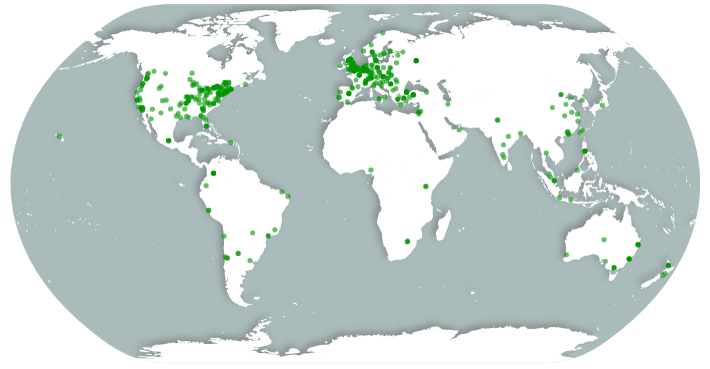

News from the Accelerator - January 2020
Happy New Year from the PSA! The end of 2019 was full of progress on many exciting fronts, and we have big plans for the first quarter of 2020. Here we summarize the most important and potentially actionable items for PSA members or other observers.
2019 By the Numbers
Our network now includes 760 researchers, representing 548 labs, in 72 countries. Our website received 37,242 visits in 2019 for 66,334 total since October 2017, and our preprints have now been downloaded 4,954, collectively. Check out this great new map from Nicholas Coles: 
Recent Coverage
The PSA has been covered in a few media outlets in the past several months. Check out this excellent article, first appearing in UnDark and later being picked up by NPR news. Additionally, this short radio blurb has quotes from Chris Chartier, Jessica Flake, and Eric Hehman, and McGill University recently featured Jessica Flake's new grant award and planned measurement invariance project through the PSA.
2019 Project Summaries and Status Updates
Our main focus in 2019 was making progress on all 6 of our selected studies. Each project made big strides.
- 001 Face Perception: In 2019, we completed the first PSA project (PSA001), which involved 214 authors and 11,481 participants from 11 world regions, and 41 countries. Currently, the Stage 2 Registered Report is under review at Nature Human Behaviour. For this project, we also launched the Secondary Analysis Challenge, which grants 10 awards of $200 to research teams that create and execute a pre-registered re-analysis of the project data. Currently, this secondary challenge has 8 submissions and all have been checked for computational reproducibility.
- 002 Object Orientation and 003 Gendered Prejudice: 2019 was a busy year for the 002 & 003 team. We translated our materials into 16 different languages and implemented our procedure across 19 countries. We have completed data collection at 23 different sites, with more sites continuing their data collection into the spring. We hope to have the Stage 2 Registered Report manuscript under review at Psychonomic Bulletin & Review in 2020.
- 004 True Belief: The Accelerated CREP collaboration is really picking up steam - 39 teams are collecting data (and more are welcome to join in here -- there is information at the top of the form with helpful links). We plan to wrap up data collection around June and work on the final manuscript shortly thereafter, to be reviewed as a Stage 2 Registered Report at Advances in Methods and Practices in Psychological Science. There are still plenty of opportunities to get involved. Contact jordan.wagge@avila.edu or crep.psych@gmail.com for more information.
- 005 Stereotype Threat: In 2019, we drafted the initial submission of our Stage 1 Registered Report for Nature Human Behaviour and received a strong revise and resubmit. We also submitted a revised version of the manuscript and are still waiting to hear back about the revision’s status. Finally, we recruited 27 collaborating labs to join the project, all of whom have secured IRB approval. If you wish to join too, you can read more about the project, and sign up as a collaborator, here.
- 006 Moral Thinking: In 2019, this project's team also drafted their initial submission of a Stage 1 Registered Report and submitted it Nature Human Behaviour, received a positive revise and resubmit, submitted a revision, received another small R&R :), and are completing the new round of revisions now. We have 147 labs signed up to collect 18,637 potential participants. Most labs are ready to test the link and collect data! If you are interested in joining, you can sign up by filling out this form. Every lab is welcome, but we are specifically searching for collaborators who could collect data from at least 100 participants in India, South-Korea, Japan, or Thailand. The experiment will be run online, so collaborators can simply have to send out a link, and participants are not required to come to the lab.
Ratified Policy
The Analysis Plan Approval Policy is now ratified by vote of the network. This policy was initiated by the Data and Methods Committee, and its drafting and editing was led by Peder Isager. Thank you for the great work on this!
Funding Search Update
- Synergy grant submitted. Patrick Forscher and Hans IJzerman led the drafting of a Synergy Grant, a large, €10 million grant administered by the European Research Council. The grant seeks to greatly expand team science in the social sciences by establishing three Synergy Centers: the Evidence Synthesis Center led by Denny Borsboom, the Tools and Standards Center led by Lisa DeBruine, and the De-WEIRDing Center led by Hans IJzerman. The grant would deeply involve the PSA and provide it a substantial sum of discretionary money to be used as the PSA sees fit. Synergy Grants have three stages of review. Hans and Patrick will hear the results of the first stage in April.
- National Science Foundation grant to be submitted this week. Chris Chartier, Neil Lewis, Jr., Heather Urry, Charlie Ebersole, and Hannah Moshontz have drafted a proposal to the NSF (our third try :) at this one) that will be submitted on the 15th. If funded, the grant would support hiring of a PSA dedicated project manager to allow us expanded data collection and more efficient overall workflow and study completion.
- John Templeton Foundation grant to be submitted this week. Charlie Ebersole and Chris Chartier have drafted a proposal to the JTF that will be submitted on the 17th. If funded, the grant would support hiring of several dedicated PSA staff members to focus on collecting non-WEIRD samples for studies within the JTF human sciences division questions of interest.
A Discussion on the PSA and Meta-Research
Peder M. Isager and Marcel van Assen hosted a discussion session titled How can meta-research improve the Psychological Science Accelerator (PSA) and how can the PSA improve meta-research? at the 2019 Meta-research day in Tilburg (https://bit.ly/2sjzU3b). The majority of the session was devoted to discussing intersections between the meta-research field and the PSA. The discussion is summarized in this blog post.
Actionable Items to Kick Off 2020
Study Selection
We are on the verge of making selection decisions for 8 submissions to the PSA. All members who have created login credentials at our membership site can now access the pdf copies of these submissions and provide their ratings and feedback. These forms will only be open for a week (until midnight on the 20th in the last time zone on earth) to allow quick conclusion of this round of study selection. We think you’ll have fun looking at and evaluating these excellent submissions! We also received a very interesting, but quite atypical submission, that we are collating feedback on. In response to our last call for studies, a research team submitted a proposal that is not so much a specific study, but rather an intriguing way in which we may select and develop a future study. The SSC found that it had promise, but that it didn't fit our typical model for submission review and selection. So, the SSC Assistant Directors decided to pull the submission from the standard review track, and instead begin a PSA-wide conversation to consider and eventually decide by consensus (or perhaps vote) if we should implement the proposal. Members, please provide your initial feedback by joining the conversation currently ongoing in our general Slack channel (scroll up to the thread beginning on November 27th).
Resource Capacity Draft Policy Ready for Feedback
We (led by Patrick Forscher) have drafted a policy that lays out how the PSA thinks about the resources that affect its capacity to run new studies. The development of this policy was inspired in part by questions from potential funders as to whether the PSA would be willing to run studies about specific topics. The PSA does not, at present, have guidelines for these decisions. The policy therefore also seeks to lay out these guidelines. You can find a draft of the policy here.
Elections and Appointments
One Associate Director position and several Assistant Director positions will be up for election or appointment in the first quarter of 2020. We will first hold a full network vote for the Associate Director seat. Subsequently, the new line-up of Associate Directors and the Director will vote to appoint the new Assistant Directors. For now, you can consider and prepare for 3 things.
- Nominations for running for Associate Director: Any PSA member may run for this seat. We will be sending out a nomination form where people can nominate themselves or nominate someone else. We will confirm with all nominees as to whether or not they’d like to run.
- Volunteers to be Election Tellers: Each PSA election is overseen by one Associate Director and three Election Tellers. Tellers will observe all of the actions of the Associate Director (in this election, Charlie Ebersole) to confirm that the election is being run fairly and accurately. We will be seeking volunteers to serve as Tellers for the upcoming election; any PSA member can volunteer.
- Prepare to Vote: consider the performance of the current leadership team, and think about what you would most want to see out of new or returning members of this team in 2020 and beyond.
Onward in 2020!
Thank you for all that you do. You can stay informed and in the convo on Slack and by checking out events on the PSA Google Calendar. As always, we are overflowing with gratitude for all that you’ve collectively given to the PSA and excitement for what we can achieve together in 2020 and beyond.
Chris
(We also wanted to pass along this cool collaboration opportunity below, being organized and led by PSA members) The Transparent Psi Project is looking for collaborators for data collection Zoltan Kekecs and Balazs Aczel (members of the PSA Methods Committee) are leading this project which is an expert consensus-based replication of one of Bem’s 2011 precognition studies. The project features state of the art methods to maximize transparency and study integrity. The study involves a computerized experiment taking about 20-30 minutes per session. Group testing is possible in a computer lab, no specialized equipment needed. Labs are expected to recruit at least 100 participants. Participants will be exposed to images with explicit erotic/sexual content in the experiment. No financial compensation is required for the participants. Data collection is expected to take place in the 2020 spring, and if needed, 2020 fall semester. Every material is provided for ethics/IRB submissions and data collection in English (translation of materials might be necessary by the collaborators). The study is pre-registered and the manuscript is accepted in principle for publication (IPA) in the journal Royal Society Open Science. Collaborators in data collection get authorship on the paper. Sign up here Preprint of the Stage 1 Registered Report here With questions contact the lead PI: kekecs.zoltan@gmail.com